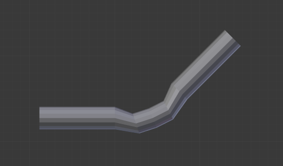

Armature Modifier¶
The Armature modifier is used for building skeletal systems (rigs) for animating the poses of characters and anything else which needs to be posed.
By adding an armature system to an object, that object can be deformed accurately so that geometry does not have to be animated by hand.
See also
For more details on armatures usage, see the armature section.
Options¶
The Armature modifier.
- Object
- The name of the armature object used by this modifier.
- Preserve Volume
Use quaternions for preserving volume of object during deformation. It can be better in many situations.
Without it, rotations at joints tend to scale down the neighboring geometry, up to nearly zero at 180 degrees from rest position. With it, the geometry is no longer scaled down, but there is a “gap”, a discontinuity when reaching 180 degrees from rest position.

Initial state. |

100° rotation, Preserve Volume disabled. |

180° rotation, Preserve Volume disabled. |

100° rotation, Preserve Volume enabled. |

179.9° rotation, Preserve Volume enabled. |

180.1° rotation, Preserve Volume enabled. |
- Vertex Group
A vertex group of the object, which weights will be used to determine the influence of this modifier’s results when mixing it with the results from other Armature ones.
Only meaningful when having at least two of these modifiers on the same object, with Multi Modifier activated.
- Invert (“double arrow” icon)
- Inverts the influence set by the vertex group defined in previous setting (i.e. reverses the weight values of this group).
Bind To¶
Methods to bind the armature to the mesh.
- Vertex Groups
Meshes and lattices only. When enabled, bones of a given name will deform vertices which belong to vertex groups of the same name. e.g. a bone named “forearm”, will only affect the vertices in the “forearm” vertex group.
The influence of one bone on a given vertex is controlled by the weight of this vertex in the relevant group. A much more precise method than Bone Envelopes, but also generally longer to set up.
- Bone Envelopes
When enabled, bones will deform vertices or control points near them, defined by each bone’s envelope radius and distance. This lets bone envelopes control the deformation (i.e. bones deform vertices in their neighborhood).
Example of skinning methods.¶ 
The weights of the “arm” vertex group.

The weights of the “forearm” vertex group.

The result when posing the armature.
The same pose, but using envelopes method rather that vertex groups.
{kind=link}
Tip
When envelopes are disabled, Blender uses the set of existing vertex group names to determine which bones are actually necessary to evaluate the modifier. Removing empty vertex groups helps to reduce dependencies, and can be essential if the mesh is used during evaluation of other bones in the same armature, e.g. as the target of a Shrinkwrap constraint.
Multi Modifier¶
Use the same data as a previous modifier (usually also an Armature one) as input. This allows you to use several armatures to deform the same object, all based on the “non-deformed” data (i.e. this avoids having the second Armature modifier deform the result of the first one…).
The results of the Armature modifiers are then mixed together, using the weights of the Vertex Group as “mixing guides”.
Tip
Armature modifiers can quickly be added to objects by parenting them to an armature.